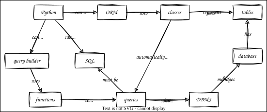

Using a Database
Overview

Outline
Direct SQL
- Use SQLite database in
./data/lab.dbinstead of CSV file - Install
_dict_factoryfactory function to get results as list of dictionaries instead of list of tuples - And use a flag to convert types like dates and times (used later)
models_sql.pyimplements model part of model-view-controller (MVC)- One function for each question we might ask of our data
- Use SQL directly instead of an object-relational mapper like SQLAlchemy, SQLModel, or Pony
- ORMs can be hard to debug and don't perfectly insulate programs from changes to schema
"""Get data from database."""
import os
import sqlite3
import util
ENV_VAR = "DATA"
class ModelException(Exception):
"""Problems with queries."""
def __init__(self, msg):
self._msg = msg
def __str__(self):
return self._msg
def connect():
"""Connect to database."""
path = os.getenv(ENV_VAR)
if not path:
raise ModelException(f"Environment variable {ENV_VAR} not set")
connection = sqlite3.connect(path, detect_types=sqlite3.PARSE_DECLTYPES)
connection.row_factory = util.dict_factory
return connection
def all_staff():
"""Get all staff."""
query = """
select * from staff
"""
try:
connection = connect()
cursor = connection.execute(query)
return cursor.fetchall()
except sqlite3.DatabaseError as exc:
raise ModelException(str(exc))
def column(name):
"""Get a single column of staff."""
query = f"""
select {name} from staff
"""
try:
connection = connect()
cursor = connection.execute(query)
return [r[name] for r in cursor.fetchall()]
except sqlite3.DatabaseError as exc:
raise ModelException(str(exc))
def row(staff_id):
"""Get a single row of staff."""
query = """
select * from staff where staff_id=?
"""
try:
connection = connect()
cursor = connection.execute(query, (staff_id,))
result = cursor.fetchall()
if len(result) == 0:
raise ModelException(f"no rows match {staff_id}")
elif len(result) > 1:
raise ModelException(f"multiple rows match {staff_id}")
return result[0]
except sqlite3.DatabaseError as exc:
raise ModelException(str(exc))
- Re-create connection each time model is accessed
- Creating it once and attaching to the Flask app fails because of multithreading
- Catch SQLite exceptions and raise our own so that our server only has to catch one thing
- Add some more error handling
Query Builder
- Security problem: we're inserting a user-defined name into a query
- Can't parameterize query on column name
- Opens us up to SQL injection attack
- And embedded SQL isn't actually that easy to read
- Use the PyPika query builder
pika_demo.pyis a proof of concept
from pypika import Query, Table
import sqlite3
import sys
import util
connection = sqlite3.connect(sys.argv[1], detect_types=sqlite3.PARSE_DECLTYPES)
connection.row_factory = util.dict_factory
staff = Table("staff")
q = Query.from_(staff).select("staff_id", "personal", "family")
print(str(q))
cursor = connection.execute(str(q))
for row in cursor.fetchall():
print(row)
models_pika.pyis shorter and more readable than the SQL version
"""Get data from database."""
import os
from pypika import Query, Table
import sqlite3
import util
ENV_VAR = "DATA"
STAFF_COLUMNS = ["staff_id", "personal", "family"]
class ModelException(Exception):
"""Problems with queries."""
def __init__(self, msg):
self._msg = msg
def __str__(self):
return self._msg
def connect():
"""Connect to database."""
path = os.getenv(ENV_VAR)
if not path:
raise ModelException(f"Environment variable {ENV_VAR} not set")
connection = sqlite3.connect(path, detect_types=sqlite3.PARSE_DECLTYPES)
connection.row_factory = util.dict_factory
return connection
def all_staff():
"""Get all staff."""
staff = Table("staff")
query = Query.from_(staff).select(*STAFF_COLUMNS)
try:
connection = connect()
cursor = connection.execute(str(query))
return cursor.fetchall()
except sqlite3.DatabaseError as exc:
raise ModelException(str(exc))
def column(name):
"""Get a single column of staff."""
if name not in STAFF_COLUMNS:
raise ModelException(f"Column '{name}' does not exist")
staff = Table("staff")
query = Query.from_(staff).select(name)
try:
connection = connect()
cursor = connection.execute(str(query))
return [r[name] for r in cursor.fetchall()]
except sqlite3.DatabaseError as exc:
raise ModelException(str(exc))
def row(staff_id):
"""Get a single row of staff."""
staff = Table("staff")
query = Query.from_(staff) \
.select(*STAFF_COLUMNS) \
.where(staff.staff_id == staff_id)
try:
connection = connect()
cursor = connection.execute(str(query))
result = cursor.fetchall()
if len(result) == 0:
raise ModelException(f"no rows match {staff_id}")
elif len(result) > 1:
raise ModelException(f"multiple rows match {staff_id}")
return result[0]
except sqlite3.DatabaseError as exc:
raise ModelException(str(exc))